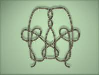
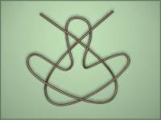
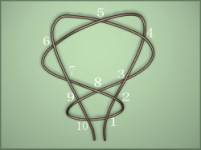

Output: Standard Output
Time Limit: 2 Seconds
Long ago, there was a monster living in Adventure
Castle of Magic. One day he saw the prince Infant
Concord and his wife Princess Charm living a sweet life.
He was very jealous. So the monster used his powerful magic and turned the prince
into a frog.
The brave and smart princess made her mind to
save her husband with all her efforts. Having overcome thousands of
difficulties and challenges, she finally arrived at the Adventure Castle of Magic. Unfortunately, the handsome
prince she loved deeply was transformed to an ugly and awful frog by the curse
of the monster. The monster gave her a very hard puzzle, which he thought to be
a mission impossible as a condition to exchange the prince.
The princess was required to choose a magic rope
from two ones. One of them would create knots by drawing the string’s ends, on
the contrary, the other wouldn’t. If the princess chose the right one, the
curse would disappear and the price would be rescued, otherwise he would be
strangled to death. In order to rescue her lover, without hesitate, the
princess accepted the challenge. My dear friends, you must wish the princess
could solve the problem successfully. Now the princess needs your help to beat
the monster. Use your clever brain and think about this difficult trick. Make
use of your programming skills to help the princess to make the correct choice.
Here are three example ropes, first two will not create knots, while the third one will. (They are
the 3rd, 4th, 5th case in the sample input)
|  |  |  |
(a) (b)
(c)
Figure:
Example ropes
The first line contains the number of tests t(1<=t<=15). Each case contains exactly one line.
We describe the rope by pointing out the
cross -point (See figure (c)). We first number all the cross-point. Then,
our finger go along the rope from one end to the other, whenever we encounter a
cross-point we will record its number on the paper. If the rope goes above the
point, we write down a positive number. If the rope goes under the point, we
write down a negative number. In the end, we put a zero as an end sign.
For example, the rope shown in figure (c) is recorded as:
+1 -2 +3 -4 +5 -6 -7 +8 +2 -1 -10 +9 -8 -3 +4
-5 +6 +7 -9 +10 0
For each test case, print the case number and the your answer. If the rope will make a
knot by drawing the string’s ends, please output “Yes”. Otherwise, output “No”.
|
5 +1 -1 0 -1 -2 -3 +1 +2 +3 0 +1 -2 -3 -4 +8 -9 +10 -16 -15 -14
-24 +23 -22 -19 +18 +22 +21 +20 +19 -18 +16 +17 +12 +13 +14 +15 -17 +11 -6 +5
+4 +3 +7 +6 -5 -7 +2 -1 -13 -12 -11 -10 +9 -8 -20 -21 -23 +24 0 +1 +2 -3 +4 -5 -6 +7 -8 +9 -1 -10
+3 -4 +5 +6 -7 +8 -9 -2 +10 0 +1 -2 +3 -4 +5 -6 -7 +8 +2 -1 -10
+9 -8 -3 +4 -5 +6 +7 -9 +10 0 |
Case
1: No Case
2: No Case 3: No Case 4: No Case 5: Yes |
Use a real rope and
a scissors will help you much!
Since the goal is to
find out the “No” rope, we should try to
disentangle the cross-points.
Problemsetter: Shu Wu
Special Thanks: Rujia
Liu, Member of Elite Problemsetters' Panel